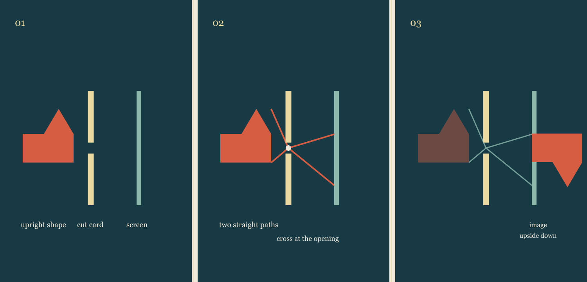

Vyt Aitken · 15 October 2026
A Small Window Turns the World

One object, one cut card, one screen. The opening is the hinge.
Two straight paths from the upright shape cross at the opening; the screen receives the shape upside down. A cut card, a screen, and something familiar are enough to make the reversal visible.
This is an illustration of the pinhole-camera effect, made in response to James Clerk Maxwell's account of experiments that bring one phenomenon forward through simple materials. Maxwell prompted the method; he did not describe this particular demonstration.
Source: James Clerk Maxwell, “Introductory Lecture on Experimental Physics” (1871), in Five of Maxwell's Papers.